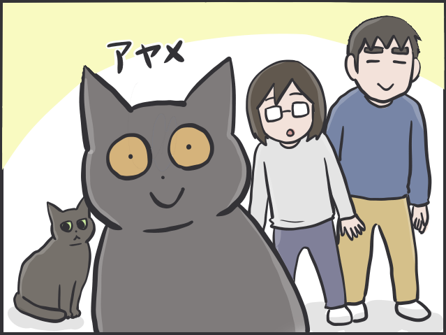
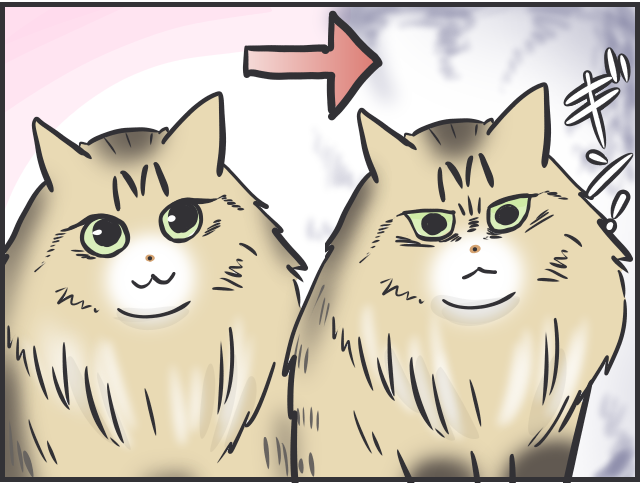
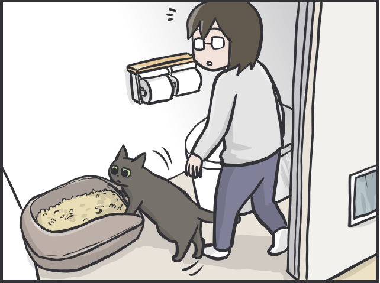
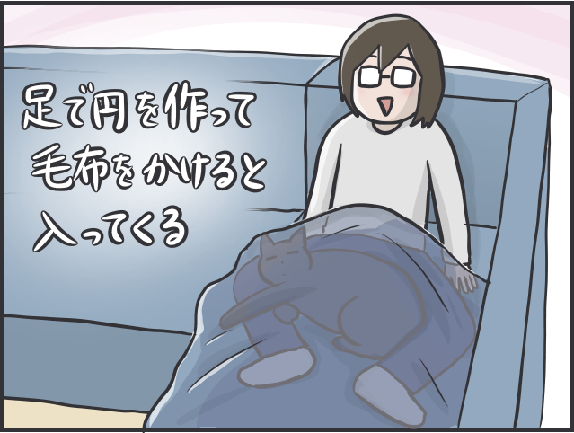
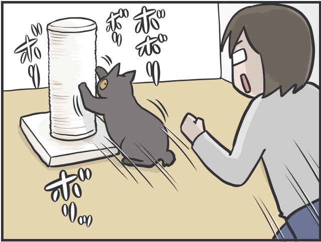
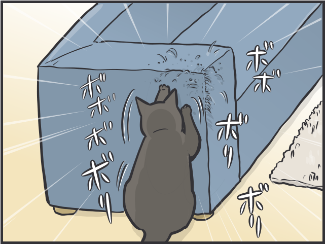
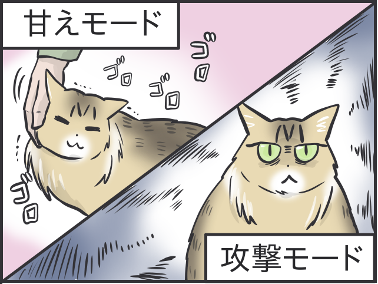
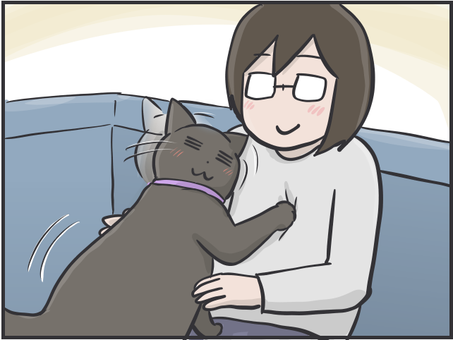
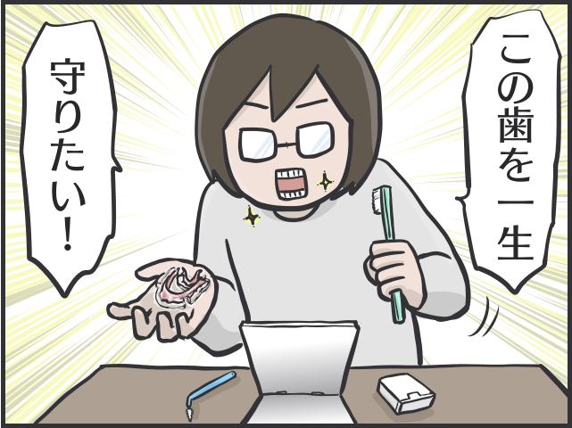
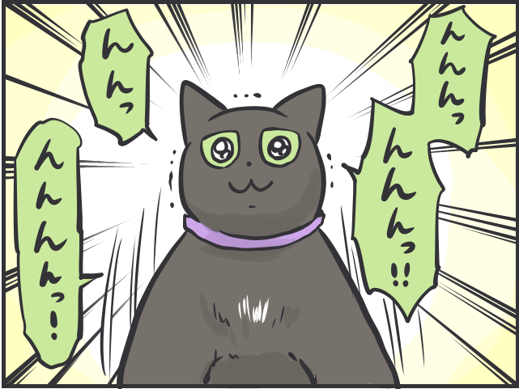

含有关键字“Funyako”的文章
1-

每个人的经历 发布日期：猫通常在想什么？如果你从猫的角度想象......爱......
-

每个人的经历 发布日期：人们说“猫很酷”...为什么我认为猫实际上很有表现力/Funi...
-

每个人的经历 发布日期：与你的猫共用一张桌子已经成为一种惯例。我尝试在我的浴室里安装一个猫砂盆......
-

每个人的经历 发布日期：“人类是猫的仆人”“我想尽可能长时间地与猫亲密接触！”我太以猫为中心了……
-

每个人的经历 发布日期：“让你的猫开心的视频是……”“结束追逐的信号是……”太多的爱……
-

每个人的经历 发布日期：“沙发变成了指甲刀”“我太不平衡了”和猫一起生活可能很困难....../......
-

每个人的经历 发布日期：甜蜜模式和攻击模式是有区别的……！我父母的猫是个傲慢的...
-

每个人的经历 发布日期：感觉腿越来越软了，但是……14岁高龄猫的萌“变”/福妮……
-

每个人的经历 发布日期：我在40多岁时开始正畸。该设备被移除已经一年了，现在发生了什么变化？ /芬亚...
-

每个人的经历 发布日期：【有猫】做了“大事”后突然高度紧张！在房间里跑来跑去...